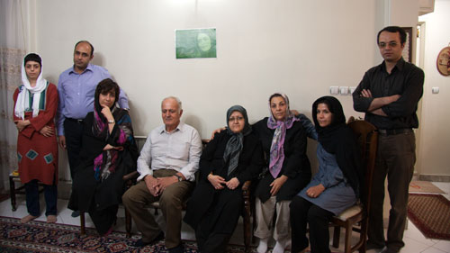

|
|

دیدار فعالین کمپین با خانواده بهاره هدایت
يكشنبه11 مهر 1389
جمعی از فعالین کمپین یک میلیون امضا به مناسبت آغاز سال تحصیلی با خانواده بهاره هدایت دیدار کردند. در این دیدار که شنبه 10 مهر ماه در منزل پدر و مادر این عضو شورای مرکزی دفتر تحکیم صورت گرفت، فعالین کمپین با قدردانی از تلاش های او در جنبش زنان و جنبش دانشجویی، آروزی آزادی هر چه سریعتر بهاره را کردند. حضار همچنین دقایقی به صورت تلفنی با بهاره هدایت صحبت کردند.
امین احمدیان -همسر بهاره هدایت- نیز در این دیدار ضمن تشریح روند پرونده همسرش گفت: "هر چند بهاره از حق تماس تلفنی روزانه و ملاقات های کابینی هفتگی بر خوردار است، اما متاسفانه از 13 اردیبهشت تا کنون به مدت 5 ماه است که از ملاقات حضوری با خانواده خود محروم بوده است." او همچنین اظهار امیدواری کرد که با توجه به اینکه بهاره هدایت در مدت بازداشت ده ماهه خود تا کنون به مرخصی نیامده است، امکان مرخصی همسرش فراهم شود. شایان ذکر است که طبق قانون برخوداری از مرخصی و ملاقات حضوری ماهانه حق هر زندانی است.

بهاره هدایت از نهم دی ماه سال گذشته در بازداشت به سر می برد. او پیش از این نیز 4 بار دیگر به دلیل فعالیت هایش در جنبش زنان و جنبش دانشجویی بازداشت شده بود. دادگاه انقلاب این فعال دانشجویی را به اتهام اجتماع و تبانی علیه نظام، توهین به رهبری و رئیسجمهوری و تبلیغ علیه نظام به 7 سال و 6 ماه زندان تعزیری محکوم کرده است. در پی صدور این حکم، حکم دو سال حبس تعلیقی که به دلیل شرکت در تجمع فعالین زن در 22 خرداد 85 صادر شده بود نیز، به اجرا درآمد.